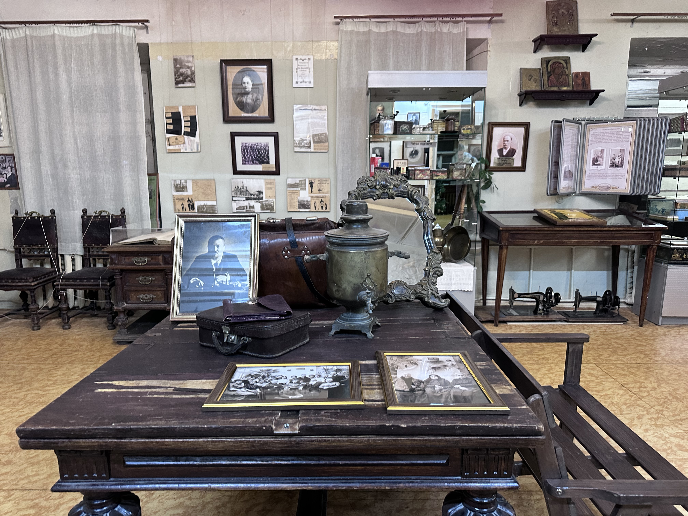
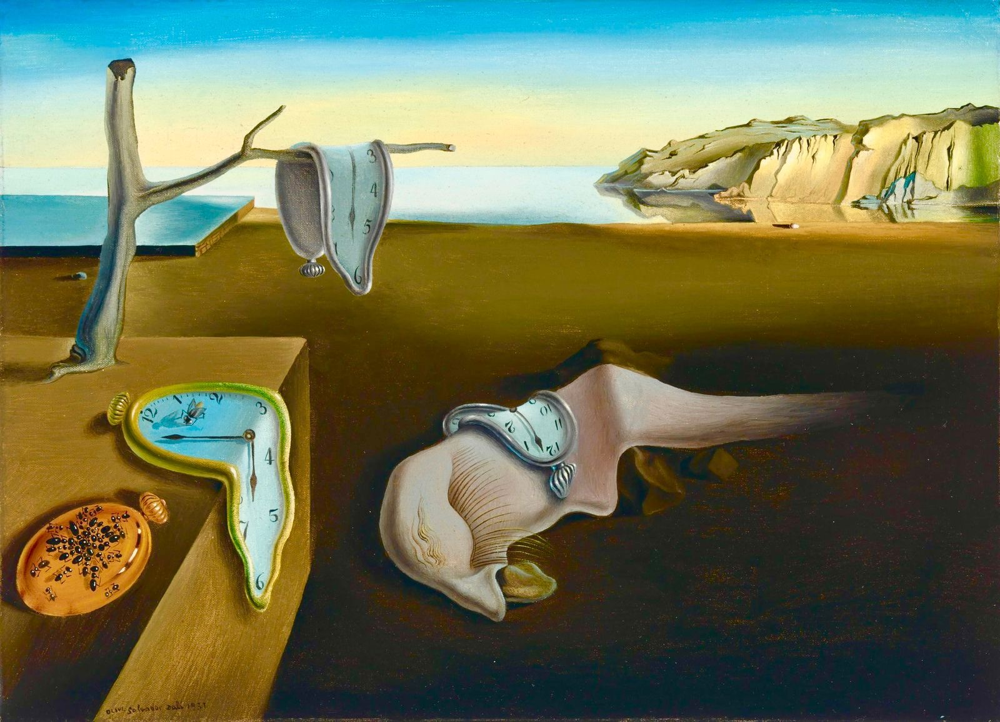
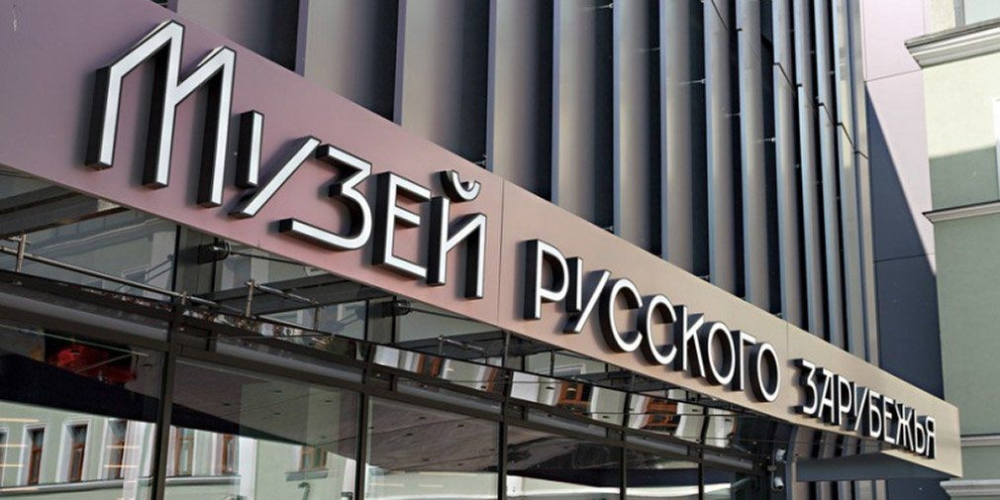
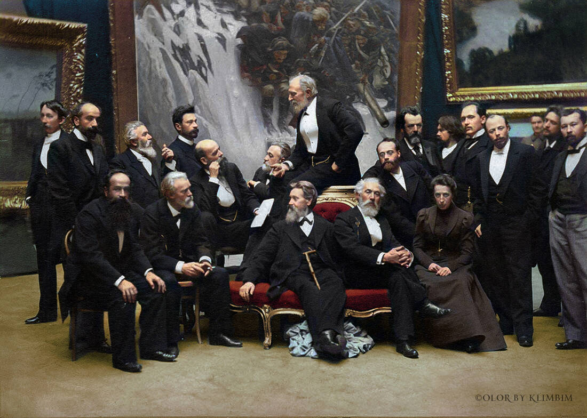
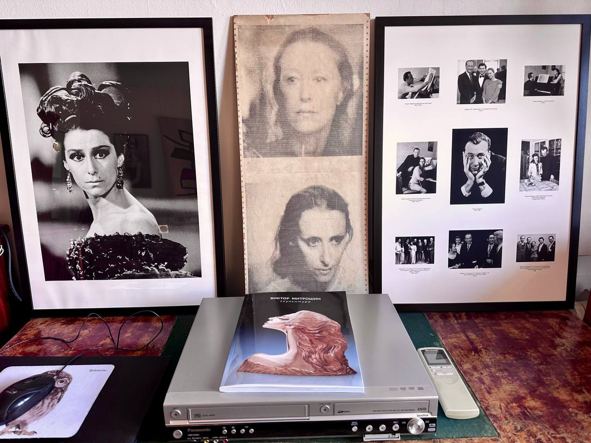

Сканди-мероприятия
-

SCANDI-ЭКСКУРСИЯ «История предпринимательства в лицах»
15 марта 2025г
НАЧАЛО: 10:30
В этот день мы посетим Музей предпринимателей, меценатов и благотворителей с индивидуальной экскурсией об истории предпринимательства.
На экскурсии мы познакомимся с историей предпринимательства на примере нескольких династий дореволюционных предпринимателей (Морозовых, Рябушинских и многих других). Мы поговорим о развитии торговли и различных отраслей промышленности, о строительстве железных дорог и основании банков, о вкладе предпринимателей дореволюционной России в экономику, социальное обеспечение, медицину, образование, науку и культуру.
Экскурсию для нас проведет потомок рода Каштановых Василий Вячеславович Зыбин.
Продолжительность экскурсионной части около 2 часов.
После экскурсии мы отправимся с вами на сканди-прогулку по набережным Москвы реки.
Пройдем по набережной парка Горького и Нескучного сада, остановимся в кафе на Воробьевых горах, продолжим путь по Бережковской набережной и дойдем до метро Киевская. По пути сделаем остановку на перекус и разминку.
Продолжительность пешеходной части около 3.5 часов. Километраж 14 километров.
Для желающих сократить маршрут есть возможность закончить на метро Воробьевы горы.
Начало программы в 10.30 метро Октябрьская кольцевая.
Окончание у метро Киевская.
В стоимость входит экскурсионное обслуживание и работа инструктора по скандинавской ходьбе.
Стоимость:
2200р (запись до 08.03.2025)
2700р (запись с 09.03.2025)
Записаться -

Интеллектуальный бранч «Сальвадор Дали - король эпатажа»
16 марта 2025г
НАЧАЛО: 12:00
Продолжение серии интеллектуальных бранчей (brunch англ. поздний завтрак)
И снова мы встречаемся с Ириной Макаровой, сотрудником Пушкинского музея, кандидатом наук. В этот раз мы будем говорить о Сальвадоре Дали. Место встречи весьма интересное - гастробар «Дневник». Находится он в самом центре Москвы на Столешниковом переулке. После мероприятия будет хорошая возможность прогуляться по красивым московским улочкам.
Друзья, приглашаем вас совершить увлекательное путешествие в мир фантазий главного сюрреалиста всех времён и народов Сальвадора Дали!
Искусствовед, кандидат наук, сотрудник ГМИИ им. А. С. Пушкина Ирина Макарова расскажет о жизни и творчестве художника, расшифрует знаки и символы на картинах Дали. Мы обсудим его неординарные, часто шокирующие поступки, взаимоотношения в семье, обожаемую супругу и многое другое.
А также вас ждёт небольшой сюрприз - любимая игра сюрреалистов с прекрасным названием «Изысканный труп»!
Продолжительность лекционной части минимум 1,5 часа (зависит также от заинтересованности участников, запасом времени лучше располагать)
Завтрак входит в стоимость (на выбор пицца горгонзолла/персик или пицца чоризо, чай). Десерт, кофе и другие напитки оплачиваются дополнительно.
Стоимость:
4000р (запись до 09.03.2025)
4500р (запись с 10.03.2025)
Записаться -

SCANDI-ЭКСКУРСИЯ «Scandi-экскурсия в Дом русского зарубежья и прогулка по московским бульварам»
22 марта 2025г
НАЧАЛО: 11:30
В этот день мы посетим с вами уникальный Дом русского зарубежья с индивидуальной экскурсией и прогуляемся по московским бульварам, устроим кофе-паузу в историческом кинотеатре «Иллюзион»
Русское зарубежье — это уникальное явление в мировой истории и культуре. Невозможно представить литературу без Бунина, Набокова и Цветаевой, авиацию без Сикорского, музыку без Рахманинова, театр без Дягилева, философию без Бердяева… Люди разного происхождения, образования, профессий и политических убеждений были вынуждены покинуть Родину, но навсегда сохранили ее образ, продолжали считать себя русскими и верить в Россию. И в надежде когда-нибудь сюда вернуться дали своим детям русское воспитание. Именно об этих людях рассказывает наша экскурсия. Об их непростых, но ярких судьбах. Об изгнании, которое стало посланием.
Экскурсию для нас проведет один из лучших экскурсоводов Дома русского зарубежья Валерий Зуйков.
Продолжительность экскурсионной части около 1,5 часов.
После экскурсии остановимся на кофе-паузу в кинотеатре Иллюзион. Прогуляемся по Яузскому, Покровскому, Чистопрудному, Сретенскому, Рождественскому и Страстному бульварам.
Начало мероприятия у метро Таганская.
Закончим прогулку у метро Тверская.
Протяженность пешеходного маршрута около 6км.
Продолжительность около 3 часов. По пути нас ждет разминка.
Для тех кто спешит закончить маршрут возможно у любой станции метро по пути. В стоимость включено полностью экскурсионное обслуживание и работа инструктора по скандинавской ходьбе.
Количество мест в группе ограничено.
Стоимость:
2000р (запись до 15.03.2025)
2500р (запись с 16.03.2025)
Записаться -

Дорога в Лавру часть 2
23 марта 2025г
НАЧАЛО: 10:00
SCANDI-поход "Дорога в Лавру", часть 2: От храма Тихвинской иконы Божьей матери в Алексеевском до храма Преподобного Серафима Саровского в Раеве
Начало маршрута: у ст.м.ВДНХ
Окончание маршрута у ст.м. Медведково
Протяженность: около 12 км
Продолжительность: около 5 ч
"Дорога в Лавру" – исторически один из главных паломнических маршрутов в России. В течении многих веков этой дорогой шли на поклон к Сергию Радонежскому, одному из самых почитаемых святых на Руси, и могущественные цари, и обездоленные нищие.
Маршрут общей протяженностью 120 км мы разделили на несколько частей, чтобы проходить его с комфортом и в удовольствие.
Второй этап большей частью пройдет вдоль реки Яузы. Пройти надо будет около 12 км. И во время прогулки мы поговорим об истории паломнического маршрута в целом, и о Сергии Радонежском, и о достопоимечательностях, которые будут встречаться нам на пути. Их не мало.
А одной из них является усадьба Свиблово, которую мы посетим с экскурсией. Мы узнаем, насколько тесно история Свиблово переплетается с историей нашей столицы — Москвы, а, значит, и с судьбой всей России. Познакомимся с историческими постройками усадьбы. Мы увидим редкую жемчужину, бывшую усадебную церковь, ныне храм Живоначальной Троицы. Через несколько лет церковь отметит 320 лет с момента освящения. Побываем в музее колоколов. А в приусадебном парке мы прикоснёмся к деревьям-памятникам, возраст которых более 200 лет.
И мы обязательно , в начале сделаем разминку, суставную и нейро гимнастику, а в конце прогулки нас ждёт заминка.
А отдохнуть и перекусить можно будет в кафе при усадьбе. И в конце маршрута нас также будет ждать трапезная для отдыха и перекуса.
Поэтому закладывайте время с запасом. Мы же идём на спортмвно-познавательную прогулку ))
Инструктор Краснова Елена
В цену включено всё спортивно-экскурсионное сопровождение. Посещение кафе оплачивается самостоятельно.
Регистрация на сайте
Вся подробная информация о времени и месте встречи в организационном чате после регистрации.
Стоимость:
2100р (запись до 18.03.2025)
2500р (запись с 19.03.2025)
Записаться -

"Знакомые незнакомцы". Индивидуальная экскурсия по выставке "Передвижники" в Третьяковской галерее и прогулка по набережным и паркам вдоль Москвы-реки
29 марта 2025г
НАЧАЛО: 10:00
Друзья, мы организовали для вас индивидуальную экскурсию по интереснейшей выставке "Передвижники". В последний раз подобное событие состоялось в Третьяковке 50 лет назад.
Передвижники - такое знакомое слово.
А так ли уж хорошо мы, зрители XXI века, их знаем?
Во время экскурсии мы увидим многие картины, которые знаем с детства: "Грачи прилетели" А. К. Саврасова, "Охотники на привале" В. Г Перова, "Крестный ход в Курской губернии" И. Е Репина, "Утро стрелецкой казни" В. И. Сурикова, "Над вечным покоем" И. И. Левитана, "Неизвестную" И. Н Крамского, "Московский дворик " В. Д. Поленова, "Рожь" И. И. Шишкина.
А также работы других менее известных художников.
Эта красивая и мощная выставка даст нам возможность обсудить очень разные темы и многие философские вопросы.
Ведь именно в этом и есть цель настоящего искусства, не правда ли?
А после экскурсии я предлагаю отдохнуть и подкрепиться в кафе и отправиться на прогулку по набережным и паркам вдоль Москвы-реки.
Наш маршрут пройдет по острову Балчуг и парку Музеон. Он будет в формате "без палок", но все равно довольно спортивным, т.к.для начала мы обязательно сделаем разминку, потом различные упражнения, затем прогуляемся, а в конце маршрута обязательная заминка.
Если же вы не представляете свой выходной без скандинавских палок, берите их с собой. На маршруте они вам пригодятся ))
Продолжительность экскурсии 1,5 ч
Экскурсовод Третьяковской галереи Анна Николаева
Протяженность прогулки: ок 5 км
Продолжительность прогулки: 1,5-2ч
Инструктор: Елена Краснова
В цену включено экскурсионно-спортивное сопровождение.
Билеты в Третьяковскую галерею оплачиваются отдельно
900 р - взрослый
540 р - льготный
Подробности о времени и месте встречи мы сообщим вам после регистрации в орг.чате в Телеграм.
Стоимость:
2800р (запись до 24.03.2025)
3300р (запись с 25.03.2025)
Записаться -

"Знакомые незнакомцы". Индивидуальная экскурсия по выставке "Передвижники" в Третьяковской галерее и прогулка по набережным и паркам вдоль Москвы-реки
12 апреля 2025г
НАЧАЛО: 11:30
Друзья, мы организовали для вас индивидуальную экскурсию по интереснейшей выставке "Передвижники". В последний раз подобное событие состоялось в Третьяковке 50 лет назад.
Балет зародился в Италии ещё в XIV-XV веках. Само балетное искусство возникло около четырёхсот лет назад и получило развитие во Франции. Образцом классического балета по праву считается русский спектакль П.И. Чайковского, созданный великим композитором в России в XIX веке. Авторству Петра Ильича принадлежат три балета – «Спящая красавица», «Лебединое озеро» и «Щелкунчик», которые до сих пор являются одними из самых исполняемых произведений искусства по всему миру.
Одной из потрясающих современниц и выдающихся балерин была Майя Михайловна Плисецкая.
Её квартиру мы посетим с интереснейшей экскурсией.
Какая же связь между балетом и скандинавской ходьбой. Есть у нас в команде увлеченный человек, который готов продемонстрировать балетные па прямо на московских бульварах.
После экскурсионной части сделаем кофе паузу. «Посплетничаем» и обсудим все услышанное.
Во время пешеходной прогулки пройдем бульвары Тверской, Никитский и Гоголевский.
Начало маршрута у метро Маяковская, окончание – у метро Кропоткинская.
Экскурсионное сопровождение сотрудниками дома-музея, сопровождение балетных разминок Анна Ефимова, организация Маргарита Волосюк.
Продолжительность экскурсионной части около 1 часа.
Продолжительность пешеходного маршрута около 2 часов
Группа 8 человек
Стоимость:
2200р (запись до 06.04.2025)
2700р (запись с 07.04.2025)
Записаться